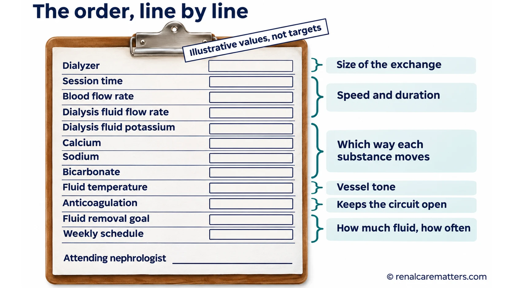
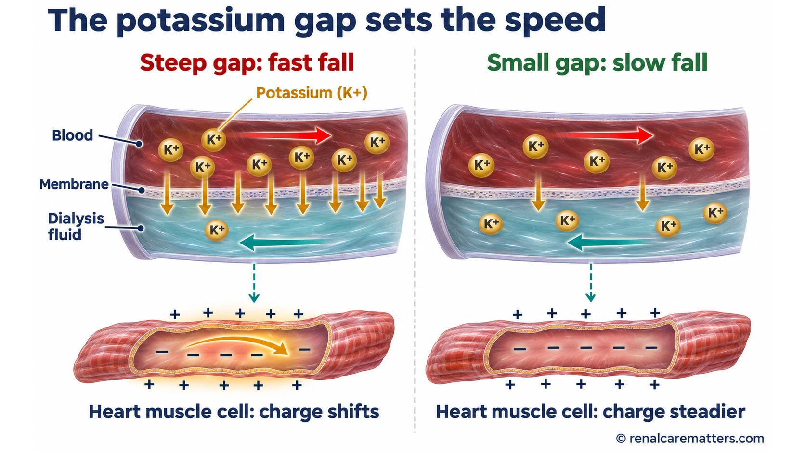
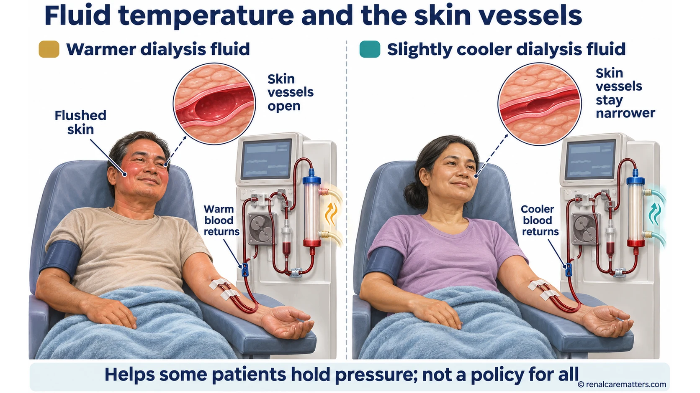
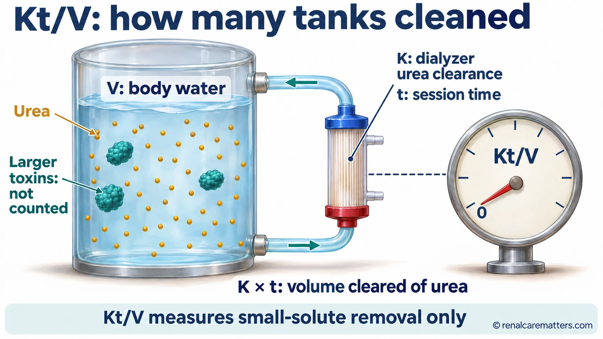
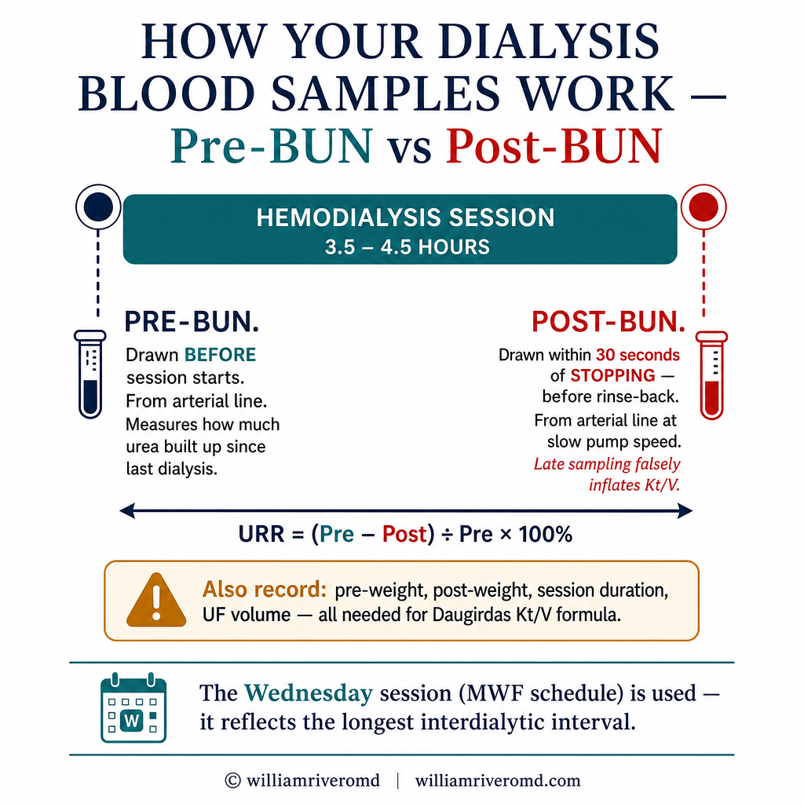
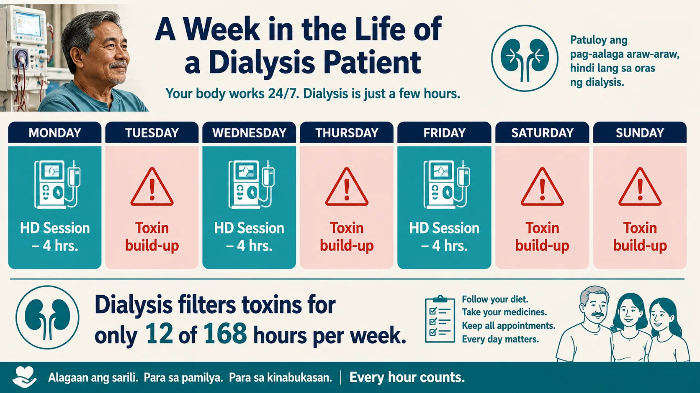
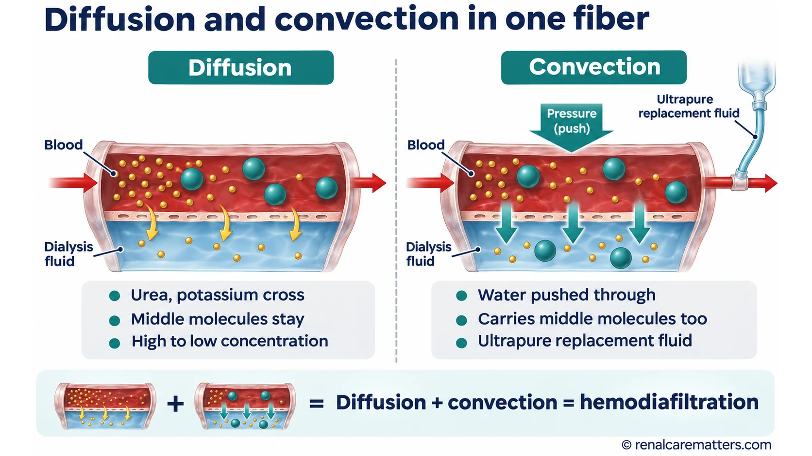

What each line of the dialysis order means, who may change it, how the dose of dialysis is measured, and what newer therapies add.
PublishedNailathalaGipatikPepalwal:ReferencesMga SanggunianMga TinubdanReng Reperensya:25Audience: Physicians who cover hemodialysis shifts · attending nephrologists, medical directors, and head nurses who orient themRead timeOras ng pagbasaOras sa pagbasaOras ning pamamasa:
This module is study material for physicians on duty in hemodialysis units. It explains the reasoning behind common decisions; it is not a protocol. At the chairside, follow your unit’s protocol and ask the attending nephrologist for guidance. Doses and cut-off values are set by your unit. Every case is fictional.
Learning objectives
After this module you should be able to
Read each line of a hemodialysis order, from the dialyzer to the fluid removal goal, and explain what each line controls.
Recognize an order that does not fit today’s patient, using the latest laboratory results and bedside findings, and report it to the attending nephrologist, who owns the prescription.
Calculate and interpret the urea reduction ratio and single-pool Kt/V, confirm that the blood samples were collected correctly, and list the causes of a low result.
Compare twice-weekly, thrice-weekly, and more frequent or longer schedules, citing what the randomized trials showed.
Describe hemodiafiltration and expanded hemodialysis, and summarize what the trials and meta-analyses show, with absolute numbers.
Pre-testBefore you read, answer the 8 self-assessment questions and note your score. After the module, select New set of questions and compare. The difference is what you learned; the questions you still miss are what to reread.
Start here
The big picture, in plain words
In plain wordsThink of the dialysis order as a recipe. The dialysis fluid is the ingredients, the dialyzer is the oven, the blood and fluid flows are the heat, and the session length is the cooking time. Change any one of them and the dish comes out different. A recipe written for last month’s guest may be wrong for the guest at the table today.
The picture has a limit. Food does not answer back. A patient’s heart, vessels, and access respond to the order in real time. A dialysis fluid potassium that suits a patient with a high pre-dialysis potassium can be dangerous for the same patient after two days of diarrhea.
Figure 1 · Key terms for this module
PrescriptionThe attending nephrologist’s written order for the session: dialyzer, time, flows, dialysis fluid composition, anticoagulation, fluid goal, and schedule.
Dialysis fluid (dialysate)The fluid on the other side of the membrane. Its composition is part of the prescription.
Blood flow rate (Qb)The speed of the blood pump, in mL per minute.
Dialysate flow rate (Qd)The speed of the dialysis fluid through the dialyzer, in mL per minute.
Urea reduction ratio (URR)The percent fall in blood urea during one session.
Kt/VDialyzer urea clearance (K) multiplied by session time (t), divided by body water (V). A measure of small-solute removal.
Hemodiafiltration (HDF)Hemodialysis with a large volume of added convection, replaced with ultrapure fluid.
You are the last physician to look at the order before the blood pump starts. Most orders fit the patient who arrives. A few do not: the potassium is low after vomiting, the catheter cannot give the written blood flow, or the patient has been leaving early. Your work is to recognize the mismatch, know which settings carry the most risk, read an adequacy result, and report clearly. You do not rewrite the prescription. That belongs to the attending nephrologist.
Opening case · fictional
Case: The potassium bath no one questioned
Aling Merlinda Ocampo, 72, from Quezon City, has been on thrice-weekly hemodialysis for three years. She arrives for her Wednesday 10:00 a.m. session. She had diarrhea for two days and ate little. Nurse Paolo Dizon has her on the monitor. Her blood pressure is 112/70 mm Hg, and her pulse is 64 per minute and irregular. Her weight is 0.6 kg above her target. The point-of-care result from the morning sample shows a potassium of 3.1 mmol/L. These are illustrative values, not targets.
Her standing order has not changed in a year. It lists a dialysis fluid potassium of 1 mEq/L, four hours, a blood flow of 350 mL/min, a dialysate flow of 500 mL/min, and her usual dialyzer. Her medication list includes digoxin, started by her cardiologist last month. Her last monthly urea reduction ratio was 61%. In the months before, it was 68% to 70%. The session log shows that she signed off 40 minutes early twice last week.
Nurse Dizon has primed the circuit. He looks up and asks, “Same order as always, Doc?”
Before reading on, decide:
Which line of the order does not fit today, and why is it dangerous for this patient now?
What could explain the fall in her urea reduction ratio, and what facts would you gather?
What do you say to the nurse now, and what exactly do you report to the attending nephrologist?
Keep your answers in mind. The lesson gives you what you need, and the case review near the end shows one sound response.
Lesson · part 1
The order, line by line
Module 05 explained the circuit. Each line of the order sets one part of it. Know the process, and you can predict what goes wrong when a line is wrong.

Figure 2. Every line of the order controls one part of the session. The attending nephrologist writes it. You check that the machine matches it and that it still fits today’s patient.
The dialyzer’s area and flux (its permeability) set the size of the exchange. Blood flow, dialysate flow, and time set its speed and duration. Removal of small molecules rises with flow, but with diminishing returns, because the dialyzer has a maximum it can clear. Time has no such ceiling. Every minute lost is dose lost.
The dialysis fluid composition sets which way each substance moves and how fast. Temperature changes vessel tone. Anticoagulation keeps the circuit open (Module 19). The fluid removal goal belongs to Module 08.
Line of the order
What it controls
Too low or short
Too high or long
Dialyzer
Size and permeability of the membrane
Less clearance
A wrong dialyzer may trigger a known reaction
Session time
Total treatment
Underdialysis; faster fluid removal per hour
Longer chair time
Blood flow (Qb)
Blood passing the membrane each minute
Less clearance; a hidden cause of low Kt/V
Pressure alarms, access trauma, recirculation
Dialysate flow (Qd)
Fresh fluid along the membrane
Less clearance
Little added clearance
Potassium
Potassium gradient
Fast fall in potassium; arrhythmia
Too little removal
Calcium
Calcium in or out
Weaker contraction, low pressure
Calcium load
Sodium
Sodium balance, thirst
Cramps, low pressure
Thirst, weight gain, hypertension
Bicarbonate
Acid correction
Persistent acidosis
Alkalosis after the session
Temperature
Heat returned
Chills
Vessels open, pressure falls
Anticoagulation
Circuit clotting
Clotted dialyzer, lost dose
Bleeding
The mechanisms in this table follow a standard dialysis text.1
Figure 3. The main settings of a hemodialysis session and what each one moves.
What the trials say about the dialyzer
The Kidney Disease Outcomes Quality Initiative (KDOQI) 2015 update recommends biocompatible high-flux or low-flux membranes (Guideline 5.1, graded 1B).2 In the Hemodialysis (HEMO) Study, 1,846 patients were randomized in a two-by-two design to standard or high dose, and to low-flux or high-flux membranes. Neither the higher dose nor high flux changed mortality (relative risks 0.96 and 0.92; both confidence intervals crossed 1).3 The Membrane Permeability Outcome (MPO) trial, in 738 patients starting dialysis, also found no overall survival difference. Survival was better with high flux in a prespecified stratum with serum albumin at or below 4 g/dL.4 A subgroup finding in a neutral trial suggests a benefit. It does not prove one.
Your job is narrower: confirm with the nurse that what is set matches what is ordered.
RememberYou check that the machine matches the order and that the order fits the patient. You do not choose the order.
Lesson · part 2
The bath: potassium, calcium, sodium, bicarbonate, and temperature
The blood moves toward the composition of the dialysis fluid. A large gap means fast movement, and the heart feels the speed.
Potassium: the gradient sets the speed
Almost all of the body’s potassium sits inside cells. The dialyzer removes potassium from the blood, at a speed set by the gap between blood and dialysis fluid. Potassium leaves the cells to refill the blood more slowly. So a steep gradient lowers serum potassium quickly, while total body potassium falls much less.1
The heart muscle cell’s resting charge depends on the ratio of potassium inside to outside the cell. A fast fall in blood potassium changes that ratio. The thick, stiff heart of many dialysis patients (Module 04) is prone to arrhythmia. Low potassium also increases digoxin’s effect on the heart, which is established pharmacology.

Figure 4. Potassium moves down the gap between blood and dialysis fluid. A steep gap lowers blood potassium fast, and the heart muscle’s electrical balance shifts with it.
Illustrative arithmetic, not a target. Potassium gradient = serum potassium − dialysis fluid potassium. Serum potassium 3.1 mmol/L with a 1 mEq/L bath: gradient 2.1. The same patient with a 2 mEq/L bath: gradient 1.1. The same patient with a 3 mEq/L bath: gradient 0.1. What it tells you: how hard the bath pulls potassium out of this patient at the start. What it does not tell you: the right bath. That choice belongs to the attending nephrologist.
The evidence on the bath is observational. In a review of 400 cardiac arrests in dialysis units, arrests occurred at about 7 per 100,000 sessions. Patients who arrested were nearly twice as likely as the general dialysis population to have been dialyzed against a 0 or 1 mEq/L potassium bath, 17.1% against 8.8%.5 A case-control study of 502 arrests in clinics treating 43,200 patients found that a dialysis fluid potassium below 2 mEq/L was associated with sudden cardiac arrest, whatever the pre-dialysis potassium. A low calcium bath was also associated with arrest.6
The Dialysis Outcomes and Practice Patterns Study (DOPPS) followed 37,765 patients in 12 countries. Compared with a dialysis fluid potassium of 3 mEq/L or more, the sudden death rate was higher with 1.5 mEq/L or less and with 2 to 2.5 mEq/L.7 These studies cannot exclude confounding, because sicker patients with high potassium receive low baths. Still, the association recurs across three data sets, and the mechanism fits.
Calcium, bicarbonate, sodium, and temperature
A low calcium bath lowers ionized calcium during the session, which can weaken heart contraction and lower pressure.1 A high bicarbonate bath can leave the patient alkalotic at the end. In DOPPS, among 17,031 patients, each 4 mEq/L higher dialysis fluid bicarbonate was associated with higher mortality (hazard ratio 1.08, 95% confidence interval 1.01 to 1.15).8 This is also observational.
Dialysis fluid sodium affects thirst, weight gain, and blood pressure. The large randomized RESOLVE trial of sodium had no published results at the time of writing, so this module makes no outcome claim about sodium.

Figure 5. Cooler dialysis fluid keeps the vessels of the skin narrower. It helps some patients hold their pressure. As a policy for every patient in a center, it did not reduce cardiovascular events in a large trial.
Cooler dialysis fluid keeps skin vessels narrower; Module 13 covers its use for low pressure. The one large randomized trial of the bath, MyTEMP, assigned 84 centers and 15,413 patients to personalized cooler fluid or standard temperature. The primary outcome, cardiovascular death or hospital admission for heart attack, ischemic stroke, or heart failure, occurred in 21.4% against 22.4% (adjusted hazard ratio 1.00).9
What you do
Compare today’s potassium, intake, losses, and medicines with the bath ordered. Change the bath yourself only if your unit’s protocol explicitly allows it.
Stop and callStop and call the attending nephrologist before the session starts when a low-potassium bath is ordered for a patient with a low or falling serum potassium, a patient on digoxin, or a patient with recent vomiting or diarrhea. Call for any mismatch between the order and today’s laboratory results.
RememberThe bath is part of the prescription. A low-potassium bath for a low-potassium patient is a dangerous order, however routine it looks.
Lesson · part 3
Does this order fit today’s patient?
A standing order fits the patient as they were at the last review. Since then they may have been admitted, started a medicine, or stopped eating. You check who is in the chair today.
Recent illness matters. In the review of 400 dialysis-unit cardiac arrests, 37% of the patients had been hospitalized in the 30 days before the arrest.5 A patient back from the hospital needs a fresh look at the order.
Figure 6 · Does this order fit today’s patient?
Identity and versionTwo identifiers and the current signed order.
AccessCan it deliver the ordered blood flow today (Modules 09 and 10)?
Weight and fluid goalAn unusual goal needs a reason (Module 08).
Latest laboratory resultsPotassium, calcium, bicarbonate, hemoglobin, compared with the bath and plan.
Bleeding riskRecent surgery, procedure, fall, or bleeding; check the anticoagulation (Module 19).
New medicinesDigoxin, QT-prolonging drugs, new blood pressure medicines.
Recent illnessAdmission, vomiting, diarrhea, poor intake, or fever.
Decide and reportProceed, change only what the protocol allows, or hold and call the attending nephrologist.
Your unit’s protocol allows some first steps without waiting for a call. Other changes belong to the attending nephrologist alone. Learn both lists before your first shift.
Usually allowed by unit protocol (first minutes, then call)
Attending nephrologist only
Pausing or reducing fluid removal for low blood pressure
The dialysis fluid potassium, calcium, sodium, and bicarbonate
Running a lower blood flow when the access cannot safely give more
Session time and schedule
Holding the session start while you obtain a result or speak to the nephrologist
The dialyzer and the anticoagulation plan
Point-of-care tests listed in the protocol
Dry weight and the fluid removal goal for future sessions
Emergency steps in a written emergency protocol
Chronic medicines and the access plan
The left column shows examples, not rules. If your protocol is silent, the change goes to the attending nephrologist.
RememberA circuit that is primed is not a reason to proceed. If the order does not fit, hold the start and call.
Lesson · part 4
Measuring the dose: URR and Kt/V
Picture the body water as a tank. Kt/V asks how many tank volumes were cleaned of urea in one session. K is the dialyzer’s urea clearance; multiplied by time (t), it gives the volume cleared. V is the body water.

Figure 7. Kt/V compares the volume of blood water cleared of urea during the session (K × t) with the volume of water in the body (V). It measures small-solute removal only.
What urea represents, and what it does not
Urea, a product of protein breakdown, crosses the membrane freely, so it marks small-solute removal. It does not measure middle molecules, protein-bound toxins, phosphate, or fluid (Module 03). Kt/V and the urea reduction ratio are surrogates. A good number does not mean the patient is well.
Where the measure came from
Gotch and Sargent re-analyzed the National Cooperative Dialysis Study, a randomized trial of urea levels and treatment times. They defined dose as Kt/V and showed that the probability of treatment failure rose sharply at low values.10 Owen and colleagues then studied 13,473 patients. Compared with a urea reduction ratio of 65% to 69%, a ratio of 55% to 59% was associated with higher odds of death (odds ratio 1.28), and below 55% even higher (1.39). Serum albumin was a far stronger predictor of death than the urea reduction ratio.11 Nutrition and illness matter more than the urea number alone.
More is not always better. In the HEMO Study, an achieved single-pool Kt/V of 1.71 against 1.32 did not change mortality (relative risk 0.96, 95% confidence interval 0.84 to 1.10).3
The targets, as the guideline states them
KDOQI 2015 Guideline 3.1 recommends a target single-pool Kt/V (spKt/V) of 1.4 per session for patients treated thrice weekly, with a minimum delivered spKt/V of 1.2 (graded 1B). For schedules other than thrice weekly, Guideline 3.3 suggests a target standard Kt/V of 2.3 volumes per week, with a minimum delivered dose of 2.1, calculated by a method that includes fluid removal and residual kidney function (not graded). Guideline 4.1 recommends a minimum of 3 hours per session for thrice-weekly patients with low residual kidney function, below 2 mL/min (graded 1D).2 Your unit sets its own target and schedule.
The formulas
The urea reduction ratio is the percent fall in blood urea nitrogen (BUN). Single-pool Kt/V by the Daugirdas second-generation formula corrects for urea made and fluid removed during the session.12 Equilibrated Kt/V (eKt/V) corrects for urea that returns from the tissues after the session ends.13 The form shown below applies to an arteriovenous access (fistula or graft); a slightly different version is used for catheters.1 Standard Kt/V compares schedules with different numbers of sessions per week and can include residual kidney clearance.14
Worked example, illustrative values only. Pre-dialysis BUN 70 mg/dL. Post-dialysis BUN 22 mg/dL. Session 4.0 hours. Fluid removed 3.0 L. Post-dialysis weight 60 kg. URR = (pre BUN − post BUN) ÷ pre BUN = (70 − 22) ÷ 70 = 68.6%. spKt/V (Daugirdas second generation) = −ln(R − 0.008 × t) + (4 − 3.5 × R) × ultrafiltration (UF) ÷ W, where R = post ÷ pre BUN, t = hours, UF = liters removed, W = post-dialysis weight in kg. R = 22 ÷ 70 = 0.314. −ln(0.314 − 0.032) = −ln(0.282) = 1.265. (4 − 3.5 × 0.314) × 3.0 ÷ 60 = 2.90 × 0.05 = 0.145. spKt/V = 1.265 + 0.145 = 1.41. eKt/V ≈ spKt/V − 0.6 × spKt/V ÷ t + 0.03 = 1.41 − 0.21 + 0.03 = 1.23. What it tells you: how much urea this session removed, by three related measures. What it does not tell you: whether the patient is well nourished, free of symptoms, or at the right weight. The attending nephrologist interprets the result.
The site’s Kt/V calculator (linked below) performs the urea reduction ratio and single-pool calculation from the same inputs. Use it to check your arithmetic, not to set a target.
RememberKt/V is a floor, not a goal. A good number does not mean a well patient, and a low number has a cause you can find.
Lesson · part 5
Getting the blood samples right
An adequacy result is two photographs, before and after. Take either at the wrong moment and the picture lies.
The pre-dialysis sample
The pre-dialysis sample must be pure blood. If saline or heparin from the needle or line enters the sample, the BUN is diluted and falsely low. A falsely low starting value makes the fall look smaller, and the dose looks lower than it was.1
The post-dialysis sample
Two hazards pull in opposite directions. The first is recirculation. Cleaned blood from the venous needle re-enters the arterial needle, so a sample drawn at full flow reads too low, and the dose looks better than it was. Slowing or stopping the blood pump for a short, set interval before the draw lets unmixed blood reach the sampling port.1
The second is rebound. After the session, urea moves back into the blood from tissues where it was removed more slowly, over roughly 30 to 60 minutes. A sample drawn late reads too high, and the dose looks worse than it was. This rebound is also why equilibrated Kt/V is lower than single-pool Kt/V.13
Figure 8 · A correct adequacy draw
Before the sessionDraw the pre-dialysis sample from the needle or catheter before any saline or heparin enters the line.
At the end of the sessionStop fluid removal as the protocol directs.
Slow or stop the pumpUse your unit’s method, slow-flow or stop-pump, for the interval the protocol sets.
Draw from the arterial portTake the post-dialysis sample promptly, before rebound begins.
Label and recordNote the actual session time, delivered blood flow, fluid removed, and post-dialysis weight. The formula needs all of them.

Figure 9. The pre-dialysis and post-dialysis samples. Dilution, recirculation, and rebound each distort the result in a predictable direction.
Sampling error
Effect on post or pre BUN
Effect on the reported dose
Saline or heparin in the pre-dialysis sample
Pre BUN falsely low
Dose looks lower than delivered
Post sample at full flow with recirculation
Post BUN falsely low
Dose looks higher than delivered
Post sample drawn late, after rebound
Post BUN falsely high
Dose looks lower than delivered
You know your unit’s method, check that it is followed, and make sure the actual time and blood flow are recorded. The KDOQI 2015 update describes the methods.2
RememberBefore you blame the prescription for a low result, ask how the samples were drawn.
Lesson · part 6
When the dose is low: access, time, flow, or sample?
A low result has four common suspects. Check the cheapest first, the sample. Then the commonest, lost time. Then the blood flow and the access.
Figure 10 · Low adequacy: access, time, flow, or sample?
SampleWas the pre-dialysis sample clean? Was the post-dialysis sample drawn by the unit’s method and on time? If not, report it and ask whether to repeat.
TimeMinutes ordered against minutes delivered: late starts, alarms, early sign-offs.
Blood flowOrdered against actual flow, and alarms that forced the pump down.
AccessRecirculation or poor flow (Modules 09 and 10).
DialyzerClotting, or a dialyzer different from the order.
PatientA larger patient has a larger V.
ReportCall the attending nephrologist with the facts.
Lost time also carries risk. In DOPPS, a treatment time below 210 minutes was associated with sudden death (hazard ratio 1.13), and so was a Kt/V below 1.2 (hazard ratio 1.10).7 These are associations from an observational cohort. Patients who shorten sessions may differ in other ways.
Illustrative arithmetic, simplified. Prescribed time 240 minutes. Delivered time 200 minutes, after two late starts and an early sign-off. Time lost = 40 ÷ 240 = 17% of the prescribed treatment. Kt is clearance multiplied by time.10 At constant clearance, Kt falls in proportion to time. A spKt/V of 1.41 would fall to about 1.41 × 200 ÷ 240 ≈ 1.18. What it tells you: time lost at the chair is dose lost, and the loss is large enough to matter. What it does not tell you: the exact new Kt/V. The real relation is logarithmic and includes urea made during the session, so a measured Kt/V is still needed.
The site’s session review calculator (linked below) summarizes delivered time, flow, and events for your report.
Stop and callStop and call the attending nephrologist when adequacy falls below the unit’s target on two consecutive checks, or when a patient repeatedly signs off early or loses treatment time. Report delivered minutes, actual blood flow, access type and recent problems, clotting, and the sampling method used.
RememberTime lost at the chair is dose lost. It shows up as a low result weeks later.
Lesson · part 7
How often and how long: schedules compared
Picture a leaking boat. Bail it three times a week and the water rises high between bailings. Bail a little every day and the level stays low. Water, potassium, and acid accumulate between sessions in the same way. The longer the gap, the higher they climb.
The picture has a limit. Dialysis removes urea fastest at the start of a session, when blood levels are highest. So more frequent sessions remove more than the same hours given in fewer sessions. Standard Kt/V, not single-pool Kt/V, is used to compare schedules.14

Figure 11. The week of a thrice-weekly patient. Fluid and potassium rise most over the long gap.
What the trials of more frequent dialysis showed
The Frequent Hemodialysis Network (FHN) Daily Trial randomized 245 patients to in-center hemodialysis six times a week or three times a week for 12 months. Weekly standard Kt/V was 3.54 against 2.49. Frequent dialysis improved both coprimary composites: death or a rise in left ventricular mass (hazard ratio 0.61, 95% confidence interval 0.46 to 0.82), and death or a fall in a physical health score (hazard ratio 0.70, 95% confidence interval 0.53 to 0.92). Vascular access interventions were more frequent with frequent dialysis.15 Left ventricular mass is a surrogate. The trial was not powered for death alone.
The FHN Nocturnal Trial randomized 87 patients to home nocturnal dialysis six nights a week or conventional dialysis. It found no significant effect on either coprimary outcome. Phosphate and blood pressure control were better in the nocturnal group.16 The small size limits what the neutral result can show.
KDOQI 2015 suggests that patients be offered in-center short frequent hemodialysis (Guideline 2.1, graded 2C). It recommends that patients considering it be informed of its risks: a possible increase in vascular access procedures (Guideline 2.2, graded 1B) and low blood pressure during dialysis (graded 1C).2
The schedule is the attending nephrologist’s decision. You know each patient’s schedule and watch the long gap (Modules 02 and 15).
RememberA missed or shortened session costs more on a schedule with fewer sessions. Report it the same day.
Lesson · part 8
Hemodiafiltration and expanded hemodialysis: what the trials show
Diffusion is tea spreading from a tea bag into still water. Small particles spread fast and large ones barely move. Convection is pouring the water through a sieve. The flow carries larger particles with it, whatever their size, up to the size of the holes.
The picture has a limit. A membrane’s pores vary in size, and blood protein coats them during the session (Module 05). Hemodiafiltration adds a large volume of convection to standard diffusion. The water removed is replaced with ultrapure fluid that the machine makes online from dialysis fluid. Expanded hemodialysis uses a medium cut-off membrane that lets more middle molecules through by internal convection, without separate replacement fluid.

Figure 12. Diffusion moves small molecules well. Convection drags larger middle molecules with the water. Hemodiafiltration combines the two and replaces the water removed with ultrapure fluid.
The trials
The open-label ESHOL trial randomized 906 patients in Spain to hemodialysis or high-efficiency postdilution online hemodiafiltration. Mortality was lower with hemodiafiltration (hazard ratio 0.70, 95% confidence interval 0.53 to 0.92).19
The Comparison of high-dose HDF with high-flux hemodialysis (HD) trial (CONVINCE) trial randomized 1,360 patients in several European countries. All were judged able to reach a convection volume of at least 23 L per session. The hemodiafiltration group achieved a mean of 25.3 L. Over a median of 30 months, death occurred in 17.3% with hemodiafiltration and 21.9% with high-flux hemodialysis (hazard ratio 0.77, 95% confidence interval 0.65 to 0.93).20 Quality of life declined in both groups, more slowly with hemodiafiltration. The clearest difference was in cognitive function: a decline of 0.95 units against 3.90 units.21 A prespecified subgroup analysis found no convincing difference in these effects across age, diabetes, cardiovascular disease, vintage, access, or residual urine.22 A cost analysis estimated about €27,000 to €37,000 per quality-adjusted life-year in Europe, and its authors advise translating costs locally.23
An individual patient data meta-analysis pooled five trials and 4,153 patients. Over a median of 30 months, death occurred in 23.3% with hemodiafiltration and 27.0% with hemodialysis (hazard ratio 0.84, 95% confidence interval 0.74 to 0.95). Risk fell as convection volume rose.24 The 2026 Cochrane update included 62 studies and 6,897 participants. Convective therapy likely reduces death from any cause (risk ratio 0.88, 95% confidence interval 0.80 to 0.96) and cardiovascular death (risk ratio 0.78), both with moderate-certainty evidence. Effects on nonfatal cardiovascular events, fatigue, access problems, and hospitalization were inconclusive. Only four small studies, with 163 participants, tested expanded hemodialysis.25
Absolute numbers, calculated here from the published proportions. These numbers needed to treat were not reported by the trials. CONVINCE: 21.9% − 17.3% = 4.6 percentage points. 1 ÷ 0.046 ≈ 22 patients treated for about 2.5 years to prevent one death.20 Pooled patient data: 27.0% − 23.3% = 3.7 percentage points. 1 ÷ 0.037 ≈ 27 patients over a median of 30 months.24 What it tells you: the size of the benefit in patients like those in the trials. What it does not tell you: the benefit in patients who cannot reach a high convection volume.
What the evidence does not settle
Trial patients had access good enough to reach a high volume; frail patients with weak access are underrepresented. Results of the UK H4RT trial were not found as published at the time of writing. Online hemodiafiltration needs ultrapure water and capable machines (Module 06). Whether units in the Philippines can deliver high-volume hemodiafiltration at scale, and at what cost, is a policy question for the Medical Director.
What you do on a hemodiafiltration session
The convection volume, often shown as substitution volume, is part of the prescription. It depends on blood flow. Check the machine summary at the end and record the blood flow achieved. The site’s expanded hemodialysis toolkit covers medium cut-off membranes.
Stop and callCall the attending nephrologist when a hemodiafiltration session cannot reach the ordered convection volume, especially if the cause is a fall in blood flow from the access.
RememberHigh-volume hemodiafiltration reduced deaths in trials of patients who could reach the volume. The volume, not the label, is what was tested.
On the floor
Real situations: problems and solutions
These are fictional but typical. For each one, cover the answer, decide what you would do, then compare. Where a step depends on local rules, your unit’s procedure and your supervisor’s direction come first.
The catheter that cannot keep up
What you see
Mr. Danilo Reyes, 58, dialyzes through a neck catheter. His order lists a blood flow the nurse cannot reach. Each time she raises the pump speed, the arterial pressure alarm sounds, and she has settled well below the written rate.
What is likely going on
The catheter cannot deliver the ordered flow, possibly from a clot or a fibrin sheath at its tip. Every minute at the lower flow delivers less dose than the order assumes.
What to do
Accept the flow the access can safely give, as the unit’s protocol allows, and record the actual rate and pressures. Call the attending nephrologist with the numbers. Module 10 covers catheter troubleshooting.
Why it matters
A dose problem that starts at the access will appear weeks later as a low Kt/V. Recording the delivered flow today makes that result explainable.
A low URR after a late draw
What you see
Aling Rosario Mendoza’s monthly urea reduction ratio has dropped sharply, although her session log shows full time and the ordered blood flow. The nurse on that day was new and drew the post-dialysis sample about 40 minutes after the session ended, once Aling Rosario had been disconnected and weighed.
What is likely going on
This is likely not a dose problem at all. A late post-dialysis sample catches urea rebound from the tissues, so the post-dialysis BUN reads high and the dose looks lower than it was. The single result does not fit her log.
What to do
Check how the sample was drawn. Report to the attending nephrologist that the sampling technique was not the unit’s standard and ask whether to repeat the measurement. Review the method with the nurse.
Why it matters
Changing the prescription for a sampling error adds treatment the patient does not need. The cheapest explanation is the first one to check.
Calcium bath after parathyroid surgery
What you see
Mr. Arnold Villanueva had his parathyroid glands removed last week and is back for dialysis. He reports tingling around the mouth and in his fingers. His standing order, written before the operation, still shows his usual dialysis fluid calcium.
What is likely going on
After parathyroid surgery the bones take up calcium fast, and blood calcium can fall steeply. A bath written before surgery may now remove calcium he cannot spare.
What to do
Do not start until you have spoken to the attending nephrologist. Ask for the latest calcium result, or for one to be drawn per protocol, and report the symptoms. Follow the unit’s protocol for symptomatic low calcium.
Why it matters
The order was right for the patient he was before surgery. Any recent procedure is a reason to check whether the order still fits.
Hemodiafiltration that falls short
What you see
Ms. Teresita Lim is on online hemodiafiltration. Her order states a substitution volume for the session. Her fistula has been hard to cannulate and the blood flow has been lower than written for a week. The machine summary shows the convection volume well below the order at each session.
What is likely going on
Convection volume depends on blood flow. With less blood through the filter, less water can be safely pushed across it, so the machine delivers less convection.
What to do
Record the delivered blood flow and convection volume and examine the fistula. Report to the attending nephrologist that the session cannot reach the ordered volume and that the access may be failing. Module 09 covers fistula assessment.
Why it matters
The trials that showed fewer deaths tested a high convection volume. A label of hemodiafiltration without the volume is not the treatment that was tested.
Two sessions of forty minutes
What you see
Mr. Eduardo Santos has signed off early twice this week because of back pain in the chair. Each time he lost about forty minutes. He asks you to sign the early end again today.
What is likely going on
Lost time is lost dose. Back pain in the chair may also be treatable, and treating it may keep him on the machine.
What to do
Examine him and address the pain per protocol. Explain plainly that the remaining minutes carry part of his treatment. If he still declines, respect his decision, document the minutes lost and the advice given, and inform the attending nephrologist.
Why it matters
Short treatment time was associated with sudden death in a large international cohort. A pattern of early sign-off is a prescription problem, not only a comfort problem.
Field notes
Read the order at the chair, beside the machine, with the nurse. An order read at the desk is not checked against what is set.
Ask for today’s potassium before the pump starts in any patient who has vomited, had diarrhea, eaten poorly, or started digoxin.
On adequacy days, watch one post-dialysis draw yourself. You will learn more about your unit’s numbers in five minutes than from a month of results.
Write delivered minutes and delivered blood flow in every note. They are the first two facts the attending nephrologist will ask for when a Kt/V is low.
When an order does not fit, say so out loud before anything is started. A circuit that is primed is not a reason to proceed.
Case review
Back to the case: The potassium bath no one questioned
Which line does not fit, and why is it dangerous now? The dialysis fluid potassium. A very low bath may have suited her when her potassium ran high. Today it is 3.1 mmol/L after diarrhea and poor intake, so the gradient is about 2.1 and her potassium would fall further and fast. She is 72, her pulse is irregular, and she takes digoxin, whose effect on the heart rises as potassium falls. Very low potassium baths were associated with cardiac arrest and sudden death in observational studies.
What could explain the fall in her URR? Her log gives the first clue. Two early sign-offs of 40 minutes each cost about a sixth of those sessions. You would also check the sampling method on the draw day, the blood flow actually run, access problems or recirculation, dialyzer clotting, and any change in her weight. Poor intake also matters; in Owen’s data, nutrition predicted outcome more strongly than the urea number.
What do you say, and what do you report? To Nurse Dizon: “Not yet. Please hold the start. Let’s get a 12-lead electrocardiogram (ECG) per protocol while I call the attending.” You do not change the bath yourself unless your unit’s protocol explicitly allows it. You call the attending nephrologist using the Situation, Background, Assessment, Recommendation (SBAR) format from Module 01 (situation, background, assessment, recommendation). Situation: a 72-year-old woman with an irregular pulse, about to start on a very low potassium bath. Background: two days of diarrhea, poor intake, digoxin since last month, potassium 3.1 mmol/L this morning. Assessment: the bath risks a fast fall in potassium in a patient prone to arrhythmia; her URR fell to 61% with two early sign-offs last week. Recommendation: a bath and plan for today, whether to check a digoxin level, and an adequacy review. You read back the new order and document it.
Skills lab · with your preceptor
Skills checklist: Order verification at the chair, and the adequacy draw
Perform this check on a simulated patient or on a real patient’s order with your preceptor, who plays the nurse and observes. Your preceptor rates each step as satisfactory, needs practice, or not observed. Steps marked Critical must all be satisfactory before sign-off. This checklist supports supervised learning; your unit’s own procedure and competency form are the authority. A printable version of every checklist is on the trainer page.
CriticalConfirms patient identity with two identifiers and confirms the current, signed order version.
Matches the dialyzer, session time, blood flow, and dialysate flow on the machine to the order.
CriticalMatches the dialysis fluid potassium, calcium, sodium, bicarbonate, and temperature to the order.
CriticalCompares the bath with today’s pre-dialysis potassium and asks about vomiting, diarrhea, poor intake, and digoxin.
Checks the anticoagulation line against bleeding risk and recent procedures.
Confirms that the access can deliver the ordered blood flow, and notes it if not.
States aloud which deviations the unit’s protocol allows and which need the attending nephrologist.
CriticalOn adequacy days, confirms that the pre-dialysis sample is drawn before saline or heparin enters the line.
CriticalConfirms that the post-dialysis sample uses the unit’s slow-flow or stop-pump method at the right time.
Records delivered minutes, actual blood flow, fluid removed, post-dialysis weight, and any interruptions.
Calculates the URR and spKt/V from a set of values and states what the result does and does not show.
CriticalReports any mismatch and the facts gathered in SBAR format, and reads back the advice received.
Placement activity. For two weeks, check the order at the chair with the nurse for every patient you start. Keep a log of each mismatch you find and how it was resolved. On one adequacy day, watch both draws for three patients and compare the method with your unit’s protocol. Review the log with your preceptor.
Self-assessment
Check your understanding
Each visit draws 8 questions at random from this module’s 15-question bank. Choose the single best answer for each, then select Check answers; an explanation appears under the best answer. Select New set of questions for a different mix. A good target is 7 of 8 on two different sets. Nothing you select is sent anywhere; scoring happens in your browser.
Go deeper
Read next on this site
The Dialysis PrescriptionThe parts of a dialysis prescription and how the attending nephrologist sets them.
Dialysis AdequacyHow adequacy is measured, and what a low result means.
Daugirdas, J. T., Blake, P. G., & Ing, T. S. (Eds.). (2015). Handbook of dialysis (5th ed.). Wolters Kluwer.
National Kidney Foundation. (2015). KDOQI clinical practice guideline for hemodialysis adequacy: 2015 update. American Journal of Kidney Diseases, 66(5), 884–930. https://doi.org/10.1053/j.ajkd.2015.07.015
Eknoyan, G., Beck, G. J., Cheung, A. K., Daugirdas, J. T., Greene, T., Kusek, J. W., Allon, M., Bailey, J., Delmez, J. A., Depner, T. A., Dwyer, J. T., Levey, A. S., Levin, N. W., Milford, E., Ornt, D. B., Rocco, M. V., Schulman, G., Schwab, S. J., Teehan, B. P., & Toto, R., for the Hemodialysis (HEMO) Study Group. (2002). Effect of dialysis dose and membrane flux in maintenance hemodialysis. New England Journal of Medicine, 347(25), 2010–2019. https://doi.org/10.1056/NEJMoa021583
Locatelli, F., Martin-Malo, A., Hannedouche, T., Loureiro, A., Papadimitriou, M., Wizemann, V., Jacobson, S. H., Czekalski, S., Ronco, C., & Vanholder, R., for the Membrane Permeability Outcome (MPO) Study Group. (2009). Effect of membrane permeability on survival of hemodialysis patients. Journal of the American Society of Nephrology, 20(3), 645–654. https://doi.org/10.1681/ASN.2008060590
Karnik, J. A., Young, B. S., Lew, N. L., Herget, M., Dubinsky, C., Lazarus, J. M., & Chertow, G. M. (2001). Cardiac arrest and sudden death in dialysis units. Kidney International, 60(1), 350–357. https://doi.org/10.1046/j.1523-1755.2001.00806.x
Pun, P. H., Lehrich, R. W., Honeycutt, E. F., Herzog, C. A., & Middleton, J. P. (2011). Modifiable risk factors associated with sudden cardiac arrest within hemodialysis clinics. Kidney International, 79(2), 218–227. https://doi.org/10.1038/ki.2010.315
Jadoul, M., Thumma, J., Fuller, D. S., Tentori, F., Li, Y., Morgenstern, H., Mendelssohn, D., Tomo, T., Ethier, J., Port, F., & Robinson, B. M. (2012). Modifiable practices associated with sudden death among hemodialysis patients in the Dialysis Outcomes and Practice Patterns Study. Clinical Journal of the American Society of Nephrology, 7(5), 765–774. https://doi.org/10.2215/CJN.08850811
Tentori, F., Karaboyas, A., Robinson, B. M., Morgenstern, H., Zhang, J., Sen, A., Ikizler, T. A., Rayner, H., Fissell, R. B., Vanholder, R., Tomo, T., & Port, F. K. (2013). Association of dialysate bicarbonate concentration with mortality in the Dialysis Outcomes and Practice Patterns Study (DOPPS). American Journal of Kidney Diseases, 62(4), 738–746. https://doi.org/10.1053/j.ajkd.2013.03.035
MyTEMP writing committee. (2022). Personalised cooler dialysate for patients receiving maintenance haemodialysis (MyTEMP): A pragmatic, cluster-randomised trial. The Lancet, 400(10364), 1693–1703. https://doi.org/10.1016/S0140-6736(22)01805-0
Gotch, F. A., & Sargent, J. A. (1985). A mechanistic analysis of the National Cooperative Dialysis Study (NCDS). Kidney International, 28(3), 526–534. https://doi.org/10.1038/ki.1985.160
Owen, W. F., Lew, N. L., Liu, Y., Lowrie, E. G., & Lazarus, J. M. (1993). The urea reduction ratio and serum albumin concentration as predictors of mortality in patients undergoing hemodialysis. New England Journal of Medicine, 329(14), 1001–1006. https://doi.org/10.1056/NEJM199309303291404
Daugirdas, J. T. (1993). Second generation logarithmic estimates of single-pool variable volume Kt/V: An analysis of error. Journal of the American Society of Nephrology, 4(5), 1205–1213. https://doi.org/10.1681/ASN.V451205
Daugirdas, J. T., & Schneditz, D. (1995). Overestimation of hemodialysis dose depends on dialysis efficiency by regional blood flow but not by conventional two pool urea kinetic analysis. ASAIO Journal, 41(3), M719–M724. https://doi.org/10.1097/00002480-199507000-00107
Daugirdas, J. T., Depner, T. A., Greene, T., Levin, N. W., Chertow, G. M., Rocco, M. V., & Frequent Hemodialysis Network Trial Group. (2010). Standard Kt/Vurea: A method of calculation that includes effects of fluid removal and residual kidney clearance. Kidney International, 77(7), 637–644. https://doi.org/10.1038/ki.2009.525
FHN Trial Group. (2010). In-center hemodialysis six times per week versus three times per week. New England Journal of Medicine, 363(24), 2287–2300. https://doi.org/10.1056/NEJMoa1001593
Rocco, M. V., Lockridge, R. S., Beck, G. J., Eggers, P. W., Gassman, J. J., Greene, T., Larive, B., Chan, C. T., Chertow, G. M., Copland, M., Hoy, C. D., Lindsay, R. M., Levin, N. W., Ornt, D. B., Pierratos, A., Pipkin, M. F., Rajagopalan, S., Stokes, J. B., Unruh, M. L., . . . Frequent Hemodialysis Network (FHN) Trial Group. (2011). The effects of frequent nocturnal home hemodialysis: The Frequent Hemodialysis Network Nocturnal Trial. Kidney International, 80(10), 1080–1091. https://doi.org/10.1038/ki.2011.213
Vilar, E., Kaja Kamal, R. M., Fotheringham, J., Busby, A., Berdeprado, J., Kislowska, E., Wellsted, D., Alchi, B., Burton, J. O., Davenport, A., & Farrington, K. (2022). A multicenter feasibility randomized controlled trial to assess the impact of incremental versus conventional initiation of hemodialysis on residual kidney function. Kidney International, 101(3), 615–625. https://doi.org/10.1016/j.kint.2021.07.025
Fernández Lucas, M., Muriel, A., Mendiola, N. R., Merino, J. L., Collado, A., Díaz Domínguez, M. E., Ruíz-Roso, G., Sánchez, R., Herrero, J. A., Bouarich, H., López de la Manzanara, V., & Zamora, J. (2025). Randomized trial of twice-weekly versus thrice-weekly hemodiafiltration for initiation of renal replacement therapy. Kidney International Reports, 10(12), 4188–4198. https://doi.org/10.1016/j.ekir.2025.09.048
Maduell, F., Moreso, F., Pons, M., Ramos, R., Mora-Macià, J., Carreras, J., Soler, J., Torres, F., Campistol, J. M., Martinez-Castelao, A., & ESHOL Study Group. (2013). High-efficiency postdilution online hemodiafiltration reduces all-cause mortality in hemodialysis patients. Journal of the American Society of Nephrology, 24(3), 487–497. https://doi.org/10.1681/ASN.2012080875
Blankestijn, P. J., Vernooij, R. W. M., Hockham, C., Strippoli, G. F. M., Canaud, B., Hegbrant, J., Barth, C., Covic, A., Cromm, K., Cucui, A., Davenport, A., Rose, M., Török, M., Woodward, M., & Bots, M. L., for the CONVINCE Scientific Committee Investigators. (2023). Effect of hemodiafiltration or hemodialysis on mortality in kidney failure. New England Journal of Medicine, 389(8), 700–709. https://doi.org/10.1056/NEJMoa2304820
Rose, M., Fischer, F. H., Liegl, G., Strippoli, G. F. M., Hockham, C., Vernooij, R. W. M., Barth, C., Canaud, B., Covic, A., Cromm, K., Cucui, A. M., Davenport, A., Fischer, K. I., Hegbrant, J., Jaha, H., Schappert, A., Török, M., Woodward, M., Bots, M. L., . . . CONVINCE Scientific Committee and CONVINCE Investigators. (2024). The CONVINCE randomized trial found positive effects on quality of life for patients with chronic kidney disease treated with hemodiafiltration. Kidney International, 106(5), 961–971. https://doi.org/10.1016/j.kint.2024.07.014
Cromm, K., Fischer, F., Pellegrino, G., Vernooij, R. W. M., Riazy, L., Barth, C., Blankestijn, P. J., Bots, M. L., Canaud, B., Davenport, A., Hegbrant, J., Woodward, M., Rose, M., & Strippoli, G. F. M. (2026). Patient-reported outcomes with high-volume hemodiafiltration versus high-flux hemodialysis across clinical subgroups: Results from the CONVINCE trial. Clinical Journal of the American Society of Nephrology. Advance online publication. https://doi.org/10.2215/CJN.0000001253
Schouten, A. E. M., Fischer, F., Blankestijn, P. J., Vernooij, R. W. M., Hockham, C., Strippoli, G. F. M., Canaud, B., Hegbrant, J., Barth, C., Cromm, K., Davenport, A., Fischer, K. I., Rose, M., Török, M., Woodward, M., Bots, M. L., de Wit, G. A., Frederix, G. W. J., van der Meulen, M. P., & CONVINCE Scientific Committee. (2025). A health economic evaluation of the multinational, randomized controlled CONVINCE trial: Cost-utility of high-dose online hemodiafiltration compared to high-flux hemodialysis. Kidney International, 107(4), 728–739. https://doi.org/10.1016/j.kint.2024.12.018
Vernooij, R. W. M., Hockham, C., Strippoli, G., Green, S., Hegbrant, J., Davenport, A., Barth, C., Canaud, B., Woodward, M., Blankestijn, P. J., & Bots, M. L., for the CONVINCE Scientific Committee and the HDF Pooling Project Investigators. (2024). Haemodiafiltration versus haemodialysis for kidney failure: An individual patient data meta-analysis of randomised controlled trials. The Lancet, 404(10464), 1742–1749. https://doi.org/10.1016/S0140-6736(24)01859-2
Vernooij, R. W., Strippoli, G. F., Veltkamp, D. M., Nistor, I., Craig, J. C., Saglimbene, V. M., Covic, A. C., & Vecchio, M. (2026). Haemodiafiltration, haemofiltration and haemodialysis for adults with kidney failure. Cochrane Database of Systematic Reviews, 2026(10), Article CD006258. https://doi.org/10.1002/14651858.CD006258.pub3
Educational study material for physicians. Does not replace the attending nephrologist’s orders, the unit’s protocols, required certification courses, or supervised practice.